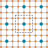

| Semaine | CM | TD / TP | |
|---|---|---|---|
| 1 | 8 sept. | Chiffrement César et Vigenère | César |
| 2 | 15 sept. | Vigenère | |
| 3 | 22 sept. | Chiffrement par substitution | Permutations |
| 4 | 29 sept. | Substitution I | |
| 5 | 6 oct. | Chiffrement asymétrique et RSA | Substitution II |
| 6 | 13 oct. | Évaluation intermédiaire + RSA I : outils arithmétiques | |
| 7 | 20 oct. | Codes correcteurs | RSA II : clés, chiffrement, signature |
| 8 | 3 nov. | Code de Hamming | |
| 9 | 10 nov. | Hachage, blockchain | Hachage : collisions, mots de passe |
| 10 | 17 nov. | Masque jetable, AES |
Cryptographie et sécurité
CM4 : codes correcteurs d'erreurs
O. Pantz
Plan du cours
Codes correcteurs d'erreurs
- Détecter les erreurs
- Pourquoi ?
- Bit de parité
- Corriger les erreurs
- Redondance
- Distance de Hamming
- Messages valides et invalides
- Le code de Hamming
- Codage, décodage d'une erreur
- Deux erreurs
- Mise en œuvre
- Cas général
- Implémentation par XOR
Détecter les erreurs
Pourquoi ?
Détecter les erreurs de transmission, et si possible les corriger.
- Vidéo, audio
- Perte de paquets sur Internet
- Codes-barres et QR codes
- CD, DVD et stockage en général
- Mémoires ECC, sondes spatiales…
Bit de parité
Alice veut transmettre à Bob le message
| 0 | 1 | 0 | 1 | 1 | 0 | 0 | 1 |
Elle ajoute au début un bit de parité :
- $0$ si le nombre de $1$ est pair ;
- $1$ si le nombre de $1$ est impair.
À vous !
Bit de parité : deux bits sont inversés
pendant la transmission.
Que peut faire Bob ?
- Détecter et corriger l'erreur
- Détecter l'erreur, sans la corriger
- Rien : il ne voit pas d'erreur
- Cela dépend des bits inversés
Corriger les erreurs
Redondance
Pour que Bob puisse corriger une erreur, Alice envoie le message trois fois.
| copie 1 | 1 | 0 | 1 | 1 | 0 | 0 | 1 |
| copie 2 | 1 | 0 | 10 | 1 | 0 | 0 | 1 |
| copie 3 | 1 | 0 | 10 | 1 | 0 | 0 | 1 |
| vote | 1 | 0 | 10 | 1 | 0 | 0 | 1 |
Distance de Hamming
Pour deux messages $m_1$ et $m_2$ de même longueur :
$$ d(m_1,m_2)=\Card\{i~:~m_1(i)\neq m_2(i)\} $$Exemple
$$ d(01\cssId{diff1}{0}11,\ 01\cssId{diff2}{1}11)\cssId{res}{\class{hidden}{=1}} $$Messages valides / invalides
Codage : $\varphi$ injective,
$$ \begin{array}{rcl} \varphi:E&\rightarrow& F\\ m &\mapsto& \varphi(m) \end{array} $$Messages valides : $\Img(\varphi) \subset F$.
Distance du code :
$$d_\varphi=\min_{\substack{m_1,m_2 \in \Img(\varphi)\\ m_1\neq m_2}} d(m_1,m_2)$$
À vous !
Code par répétition ×3 :
chaque bit est envoyé 3 fois
($000$ ou $111$).
Quelle est la distance $d_\varphi$ du code ?
- 1
- 2
- 3
- 6
Le code de Hamming
Richard Hamming (1915–1988)
Bell Labs, fin des années 1940 (publié en 1950).
Code de Hamming [15,11,3]
Une erreur au bit 12
Bob reçoit le message : y a-t-il une erreur ? Où ?
Erreur au bit 12 : Bob la corrige
0
1
2
3
4
5
6
7
8
9
10
11
12
13
14
15
1
0
1
1
1
0
1
10
0
1
0
Deux erreurs
et à quoi sert le bit 0 ?
0
1
2
3
4
5
6
7
8
9
10
11
12
13
14
15
0
1
1
0
0
1
10
0
1
0
1
10
0
1
0
Mise en œuvre
Hamming : cas général
Avec $n$ bits de contrôle :
- message codé : $2^n-1$ bits ;
- message transmis : $2^n-1-n$ bits ;
- distance du code : $3$.
Exemple : $n=4$
$$[\,15,\ 11,\ 3\,]$$Implémentation
Codage / décodage / correction
0
1
2
3
4
5
6
7
8
9
10
11
12
13
14
15
1
0
1
1
10
0
1
1
0
1
0
À vous !
Bob reçoit un mot dont les 1
sont aux positions
$3 = 0011_2$, $5 = 0101_2$,
$6 = 0110_2$, $9 = 1001_2$.
Quel bit est erroné ?
- Le bit 3
- Le bit 5
- Le bit 9
- Aucun
À retenir
Un code de distance $d$ détecte jusqu'à $d-1$ erreurs et en corrige jusqu'à $\lfloor (d-1)/2 \rfloor$.
Le code de Hamming [15,11,3] corrige une erreur avec 4 bits de contrôle : le XOR des positions des 1 donne la position de l'erreur.
Un bit de parité global en plus permet de détecter deux erreurs.
Pour revoir : le code de Hamming par 3Blue1Brown (YouTube).
À vous !
Pour finir :
quel âge avait Richard Hamming
quand il a publié son code ?
- 25 ans
- 35 ans
- 45 ans
- 73 ans
Merci !
Le code de Hamming corrige une erreur
avec seulement quelques bits de contrôle.
Prochaine séance : TP code de Hamming.